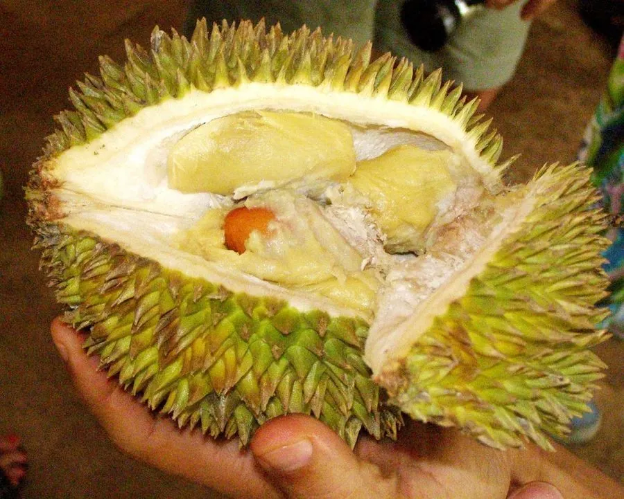

乔木 · 植物界
榴莲 Durio zibethinus

东南亚著名的热带水果，果实巨大、外表密生尖刺，果肉气味浓烈而独特，被誉为热带果中的“水果之王”。
- 分类
- 门被子植物门纲木兰纲目锦葵目科锦葵科属榴莲属
- 栖息环境
- 海拔 800 米以下的热带雨林气候区，喜高温多湿
- 地理分布
- 原产婆罗洲、苏门答腊等地，泰国、马来西亚、印度尼西亚栽培最盛；中国海南等地试种
- 保护级别
- 暂无评估；中国未列入国家重点保护野生植物名录
物种志
榴莲为常绿大乔木，高可达 40 m，树干通直，树皮灰褐色；叶片互生，长椭圆形，革质，叶背具银灰色鳞片。花期 3–4 月，花序生于老枝或主干上，花大、白色至淡黄色，傍晚开放、散发浓香，由蝙蝠传粉；果实为巨大的蒴果，球形或椭圆形，直径可达 20 cm，表面密生尖刺，成熟时开裂，内含 1–5 个假种皮包被的种子，假种皮即食用部分。
榴莲原产婆罗洲、苏门答腊等东南亚地区，泰国、马来西亚、印度尼西亚栽培最盛，中国海南、广东、云南部分地区试种成功。它喜高温多湿、光照充足，适宜深厚肥沃、排水良好的热带土壤，果实成熟后会自然掉落。榴莲果肉富含脂肪、糖类与多种维生素，气味浓烈，爱之者视为美味，厌之者避之不及；种子可煮食，果皮可入药。榴莲需在树下拾取成熟果实，有“水果之王”与“树上黄金”之称。
形态与习性
- 株高可达 40 m，树干通直
- 花期3–4 月，花朵傍晚开放
- 果期6–8 月，果实表面密生尖刺
- 光照喜光，不耐长期荫蔽
- 水分喜湿润，怕积水
- 土壤深厚肥沃、排水良好的热带土壤
- 主要用途鲜食水果、种子煮食、果皮入药
趣味知识
- 榴莲的花在傍晚开放、香气浓烈，主要靠蝙蝠传粉。
- 榴莲果实成熟后会自然掉落，果农通常在树下张网或定时拾取。
- 榴莲的种子也可煮食，味道类似栗子，果皮可入药。
- 榴莲气味浓烈，爱之者视为美味，厌之者避之不及，因此被称为“水果之王”。